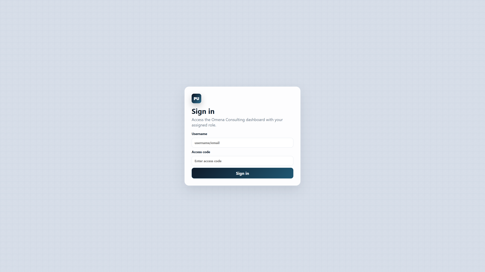
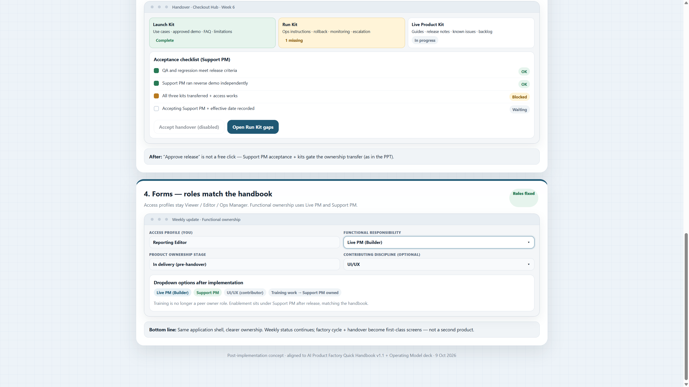
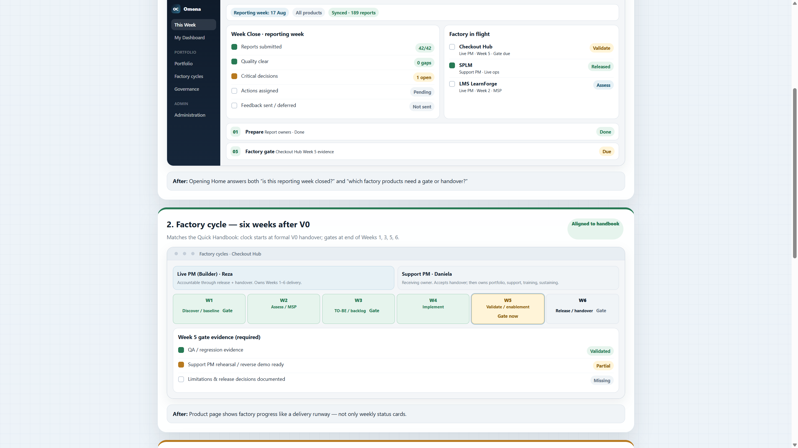
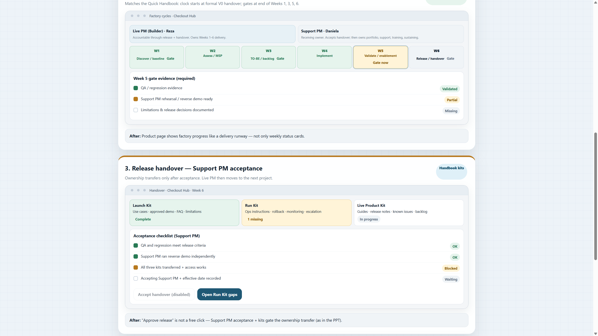
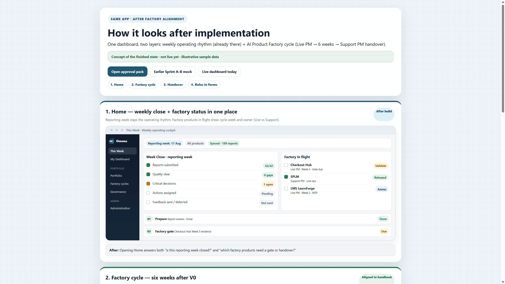

You own the current live version. You alone Accept handover for the next factory cycle. Training / demos / sustaining sit under you after release.

v1.1 live)Weekly content: status, risks, support load, training/demos, sustaining backlog.

Never merge next-version factory work into your live weekly update line.

Ops Manager cannot Accept. After Accept: ownership stage becomes Live ops; Live PM moves on.

